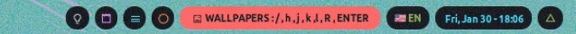
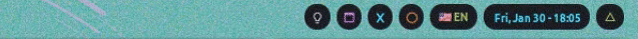
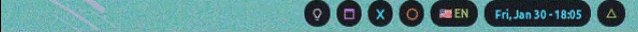
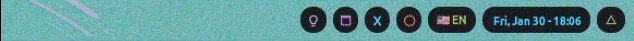

Keyboard shortcuts
This desktop is driven from the keyboard. Windows arrange themselves; you move between them with keys.
The six for day one
Learn these and you can use the computer. Everything else can wait.
| Press this | To do this |
|---|---|
| Super+Enter | Open a terminal |
| Super+Shift+Enter | Open a program. A search box appears; type a few letters of the name and press Enter |
| Super+Shift+c | Close the window you are looking at |
| Super+j / Super+k | Move to the next / previous window |
| Super+1 … Super+9 | Switch to workspace 1…9. Nine separate screens' worth of windows |
| Super+Shift+k then k | Show the shortcut list on screen. When you forget one, this is faster than this page |
Which key is which
| Written here as | The key on your keyboard |
|---|---|
| Super | The Windows key, between Ctrl and Alt. On an Apple keyboard, the Command key. |
| Alt | The Alt key, exactly as labelled. |
| Super+Shift+c | Hold Super and Shift together, then tap c. |
| Super+P then c | Hold Super and tap P. Let go. Then tap c on its own. |
Caps Lock is not an Alt key unless you asked for it. An optional extra makes it one, but it is not installed by default. Use your real Alt key.
To turn it on: ./wizard.sh --yes --only=xmodmap. It takes Caps Lock away
completely. There is no way to still get capital-lock.
Moving between windows
| Press | Result |
|---|---|
| Super+j | Move to the window below |
| Super+k | Move to the window above |
| Super+h | Move to the window on the left |
| Super+l | Move to the window on the right |
| Super+Shift+h | Move the window itself to the left |
| Super+Shift+l | Move the window itself to the right |
| Super+Shift+j | Move the window itself down |
| Super+f | Make the window fill the whole screen. Press again to undo |
| Super+x | Make the window as big as it can be without hiding the others. Press again to undo |
| Super+t | Let this one window float freely, so you can drag it. Press again to put it back in the grid |
| Super+Tab | Change how windows are arranged. See the three arrangements below |
| Super+Shift+Space | Show all the windows in the stack, or one |
| Super+Shift+c | Close the window |
| Super+. | Move to the next monitor |
| Super+, | Move to the previous monitor |
For making windows bigger or smaller, see resize mode.
The three arrangements
Super+Tab cycles through these.
| Name | What it looks like |
|---|---|
| MonadTall | The usual one. One big window on the left, the rest stacked down the right. |
| Max | One window at a time, filling the screen. No border, no gaps. |
| TreeTab | A list of your windows down the left side, one window showing at a time. |
Why Super+h behaves differently in some arrangements
Max and TreeTab have no concept of "left", so the key falls back to "previous window" there. Without that fallback, ordinary use logged an error constantly: two workspaces default to Max.
Workspaces
Nine workspaces, like nine separate desks. Each holds its own windows. Switching is instant.
| Press | Result |
|---|---|
| Super+1…9 | Go to that workspace |
| Super+Shift+1…9 | Send the current window to that workspace |
Programs open on a workspace chosen for them, so things stay tidy on their own.
| Workspace | Opens here |
|---|---|
| 1 | TickTick |
| 2 | qutebrowser, Zen Browser, VLC, Firefox |
| 3 | File managers |
| 4 | VS Code, Zed, the terminal, Cursor |
| 5 | Brave |
| 6 | Chrome, Chromium |
| 7 | Empty — yours to use |
| 8 | Documents: LibreOffice, PDF and ebook readers. Opening one takes you here |
| 9 | Thunderbird, Telegram, Discord |
A tenth workspace holds Anki, Obsidian and the notes window. It has no number key. You reach it by opening one of those programs.
Inside most modes the plain number keys still switch workspaces, so you never get stuck on the wrong desk.
Opening programs
These are toggles, not plain launchers. Already running, they jump you to it. Not running, they start it.
| Press | Program |
|---|---|
| Super+Enter | A terminal (kitty) |
| Super+Shift+Enter | The program launcher. Type a name, press Enter |
| Super+n | Terminal |
| Super+b | Brave browser |
| Super+v | qutebrowser |
| Super+m | File manager |
| Super+Shift+t | Telegram |
| Super+Shift+o | Obsidian, for drawing (assumes you have Excalidraw installed in it) |
| Super+Shift+s | Your notes file, in a terminal editor |
| Alt+Shift+a | Anki flashcards |
Whole-computer shortcuts
| Press | Result |
|---|---|
| Super+Shift+r | Restart the desktop. Your windows stay where they are. Do this after changing a setting |
| Super+Shift+q | Log out, shut down, restart or lock. A menu appears |
| Super+Shift+F5 | Refresh the desktop without restarting the computer |
| Super+Shift+F6 | Show your Android phone's screen on the computer |
| Super+Shift+z | Move the bar between the top and the bottom of the screen |
| Super+` | Show or hide the second group of bar icons |
| Screenshot. Drag a box; it goes straight to your clipboard | |
| F8 | Dictation, live. Speak, and the words type themselves as you pause. Press again to stop |
| F9 | Dictation, all at once. Speak, press again, and the whole thing is typed out |
| Alt+Shift+r | Reapply the Caps-Lock-as-Alt setting, if you turned that on |
Why dictation is on F8 and F9 and not somewhere more obvious
A shortcut with no modifier is taken from every application, permanently. So the only question is which keys nothing else wants.
Across that row: F1 help, F2 rename, F3 find-next, F5 reload, F6 address bar, F7 caret browsing, F10 menu bar, F11 fullscreen, F12 developer tools. Nothing claims F8 and F9.
They are single keys because dictation is a hold-a-thought action. The value is starting it before the sentence goes, and a three-key combination is long enough to lose it.
The Alt shortcuts
| Press | Result |
|---|---|
| Alt+Shift+d | The shelf. A panel slides down that you can drag files, text and images into, and drag back out later. See qdrop |
| Alt+v | Clipboard history. Everything you have copied recently, with picture previews. Ctrl+j and Ctrl+k move up and down |
| Alt+p | Today and this week's plans and to-dos |
| Alt+n | Dismiss the notification on screen |
| Alt+Tab | Show or hide the system tray icons |
| Alt+` | Show or hide the first group of bar icons |
Clicking without a mouse
Press one of these and letters appear over everything clickable. Type the letters on the one you want and it is clicked. Works in browsers, menus and most applications.
| Press | Result |
|---|---|
| Alt+Space | Label everything clickable and click the one you pick |
| Alt+j | Pick a scrollable area and scroll it with the keyboard |
| Alt+/ | Search on-screen text, then click the match |
| Alt+c | Move a text cursor around with keys, select and copy |
| Alt+Shift+c | Type a word to find, and land the text cursor there |
| Alt+e | Edit whatever text box you are in using a proper editor |
The same six are grouped under hint mode, if one place is easier to remember than six shortcuts.
Why Alt+Space and Alt+c specifically
The tool this is based on uses Shift+Space. Here that would swallow every Shift+Space you type. Caret mode takes c because Alt+v is already the clipboard history.
They are bound directly, not only inside the mode, because hinting is constant. A mode costs a keystroke plus remembering you are in one.
Drop-down windows
These slide down over whatever you are doing. The same key sends them away.
| Press | Window |
|---|---|
| Alt+1 | A terminal |
| Alt+2 | A second terminal |
| Alt+5 | A calculator |
| Alt+8 | |
| Alt+9 | DeepSeek |
| Alt+0 | ChatGPT |
Alt+3 and Alt+4 still mean sound and monitors, but they open the sound and monitor popups rather than a window.
Why the three web ones cost almost nothing
WhatsApp, DeepSeek and ChatGPT are separate profiles inside the one Brave you already have, not three browsers.
Three browsers each spawn their own graphics process, network service, storage service and three helper processes to render one page. That came to about 4.6 GB on a 7.6 GB laptop, which is what kept the system killing tabs and showing "Aw, Snap!" in the WhatsApp window. Sharing the engine costs one renderer each. The logins stay separate.
Mouse
| Do this | Result |
|---|---|
| Hold Super and drag with the left button | Move a floating window |
| Hold Super and drag with the right button | Resize a floating window |
| Hold Super and click the middle button | Bring the window to the front |
Windows focus when the mouse moves over them. No click needed.
Modes
A mode puts the keyboard into a temporary state. A coloured chip appears in the bar naming the mode and the keys it accepts. Esc always leaves.
| Press | Mode | Stays open? |
|---|---|---|
| Super+P | The menu key. Opens everything else | No. One key, one action, then it ends |
| Super+P then w | Wallpaper picker | Yes |
| Super+P then n | Wi-Fi | Yes |
| Super+P then b | Bluetooth | Yes |
| Alt+3 | Sound | Yes. Same key closes it |
| Alt+4 | Monitors | Yes. Same key closes it |
| Super+/ | Volume and brightness | Yes |
| Super+r | Resizing windows | Yes |
| Super+Shift+w | Drawing on the screen | Yes |
| Super+Shift+f | Hint mode | Yes, but each action leaves it |
| Super+Space | Keyboard language | Yes |
| Super+Shift+k | Cheatsheets | Yes |
| Super+F12 | Passthrough | Yes |
Super+P — the menu key
The one to remember. Hold Super, tap P, let go, tap one letter. Almost everything is one letter from here.
| Then press | What you get |
|---|---|
| c | Change the colour theme |
| w | Change the wallpaper |
| n | Connect to Wi-Fi |
| b | Connect Bluetooth |
| p | Your saved passwords |
| l | Screen brightness |
| t | Your to-do list |
| k | Close a frozen program |
| a | Add an Anki flashcard |
| e | Translate the text you have selected |
| s | Spell check |
| i | Screenshot, with annotation tools |
| r | Record video, audio, webcam or a gif |
| d | Open one of your documents |
| f | Edit a settings file |
| m | Read a manual page |
| o | Store and copy notes |
| y | YouTube menu |
| h | List every bundled menu script |
| z | Your saved links, with previews |
| q | Log out / shut down menu |
| x | Clear all notifications |
| 1…9 | Switch workspace |
Wallpaper picker — Super+P then w

| Press | Result |
|---|---|
| h / l | Move left / right |
| j / k | Move down / up |
| r | Jump to a random one |
| / | Search by name |
| Enter | Use this one |
| q or Esc | Close |
Drop any image into ~/Pictures/Wallpapers/ and it appears here straight
away.
Changing the wallpaper does not change your colours, unless you are on the theme called Wallpaper. On every other theme you chose those colours deliberately, so a new picture is only a new picture. See Changing the colours.
Wi-Fi — Super+P then n
| Press | Result |
|---|---|
| j / k | Move down / up the list |
| g / Shift+g | Jump to the top / bottom |
| Enter | Connect |
| d | Disconnect |
| x | Forget this network |
| n | Connect to a hidden network |
| t | Turn Wi-Fi off or on |
| s | Show a QR code so a phone can join this network |
| r | Search for networks again |
| / | Search the list |
| c | Give up on a connection that is taking too long |
| q or Esc | Close |
A wrong password makes it ask again rather than saving a network that can never connect.
Bluetooth — Super+P then b
Searching, pairing, connecting, disconnecting and removing all happen here.
| Press | Result |
|---|---|
| j / k | Move down / up the list |
| g / Shift+g | Jump to the top / bottom |
| Enter | Connect |
| d | Disconnect |
| x | Remove this device |
| t | Turn Bluetooth off or on |
| r | Search for devices |
| / | Search the list |
| c | Give up on a connection that is hanging. Connecting to a device out of range otherwise never finishes |
| q or Esc | Close |
Sound — Alt+3
Choose speakers or headphones, set per-program volume, pick a microphone. Alt+3 again closes it.
| Press | Result |
|---|---|
| j / k | Move down / up |
| g / Shift+g | Jump to the top / bottom |
| Tab / Shift+Tab | Next / previous view |
| o | Outputs — speakers and headphones |
| i | Inputs — microphones |
| a | What is playing right now, per program |
| s | What is recording right now |
| p | Sound card modes |
| Shift+p | Sockets — the setting that picks headphones over speakers on one card |
| Shift+c | Every sound card at once |
| Enter | Use this one. On an output this also moves whatever is already playing across — otherwise only new sounds would follow |
| d | Send this program's sound to the default device |
| h / l | Volume down / up |
| m | Mute |
| b / Shift+b | Balance left / right |
| 0 | Put the balance back in the middle |
| r | Refresh the list |
| c | Give up on a change that is hanging — a Bluetooth headset can take seconds |
| q, Esc or Alt+3 | Close |
Monitors — Alt+4
Set up a second screen: position, resolution, which is primary. Alt+4 again closes it.
| Press | Result |
|---|---|
| i | Laptop screen only |
| e | External screen only |
| m | Show the same thing on both |
| h / l | Put this screen to the left / right of the other |
| u / d | Put it above / below |
| j / k | Move down / up. While arranging, these move the screen instead of the cursor |
| g / Shift+g | Jump to the top / bottom |
| Tab | Select the next screen |
| a | Start arranging them |
| = | While arranging: line them up by top edges, middles, or bottom edges |
| Enter | Open the resolution list for this screen, and apply from inside it |
| Backspace | Go back |
| p | Make this the primary screen |
| t | Rotate it |
| f | Mirror it |
| o | Turn this screen off or on |
| v | Show your saved arrangements |
| s | Save this arrangement |
| x | Delete a saved arrangement |
| y | Keep the change — see below |
| c | Undo it now |
| r | Refresh |
| q, Esc or Alt+4 | Close |
A change that might blank your screen stays temporary until you press y. Do nothing and a countdown undoes it. Leaving the mode undoes it too. Pick a resolution your monitor cannot show and you only have to wait.
Volume and brightness — Super+/
| Press | Result |
|---|---|
| Shift+k / Shift+j | Volume up / down |
| Shift+m | Mute |
| Shift+l / Shift+h | Screen brighter / dimmer |
| Shift+p | Shrink the video you are watching into a corner, so you can work over it |
| 1…9 | Switch workspace |
| q or Esc | Leave |
Resizing windows — Super+r

| Press | Result |
|---|---|
| Shift+l | Make the main window wider |
| Shift+h | Make it narrower |
| Shift+n | Put everything back to the default sizes |
| 1…9 | Switch workspace |
| q or Esc | Leave |
Drawing on the screen — Super+Shift+w

| Press | Result |
|---|---|
| w | Start or stop drawing. While it is on, drag the mouse to draw |
| c | Erase everything |
| z | Undo |
| r | Redo |
| v | Hide or show what you drew |
| 1…9 | Switch workspace |
| q or Esc | Leave |
Hint mode — Super+Shift+f
The same six mouse-free actions as the Alt shortcuts, in one place. Each one ends the mode.
| Press | Result |
|---|---|
| h | Label everything clickable, and click the one you pick |
| s | Pick a scrollable area and scroll it with the keyboard |
| f | Search on-screen text — numbers pick, Enter clicks |
| v | Move a text cursor with keys. v selects, y copies |
| Shift+v | Type a word to find, and land the cursor there |
| e | Edit this text box in a proper editor. Save and quit puts it back |
| t | Scroll to the top, fast |
| b | Scroll to the bottom, fast |
| 1…9 | Switch workspace |
| q or Esc | Leave |
Why every action ends the mode
It used to stay open so actions could be chained. But this mode swallows every other shortcut on the desktop while open, including the ones that restart it, and nothing told you that you were in it. A mode you cannot tell you are inside is indistinguishable from a broken keyboard. Chaining was not worth that.
Switching keyboard language — Super+Space

| Press | Layout |
|---|---|
| e | English |
| a | Arabic |
| t | Turkish |
| d | German |
| q or Esc | Leave |
These four are tied to positions on the keyboard, not letters. They stay on the same physical keys whatever language is active. That matters, because you press them precisely when the keyboard is producing the wrong letters. The letters listed are US-keyboard positions.
The built-in cheatsheets — Super+Shift+k
Every shortcut on cards, on screen. Faster than this web page.
| Press | Result |
|---|---|
| k | Show the desktop shortcuts. If a sheet is already open, scroll up |
| j | Scroll down |
| v | Show the Vim text editor shortcuts instead |
| f | Show the shell and terminal shortcuts instead |
| Tab | Next screenful |
| Shift+Tab | Previous screenful |
| 1…9 | Switch workspace |
| q or Esc | Close |
Only one sheet is open at a time, so j and k always mean the one you can see. Modifier keys appear as symbols: ⇧ Shift, ⌃ Ctrl, ⏎ Enter, ␣ Space. The header carries the key to them.
Passthrough — Super+F12
Turns this desktop's shortcuts off temporarily so a program can receive keys the desktop would otherwise take: a virtual machine, a remote desktop, a game. Super+F12 again, or Esc, turns them back on.
Getting this list on screen
The desktop builds this list from the settings it is running, so it is never out of date:
- Press Super+Shift+k then k.
- Or click the logo in the bar and choose Keybindings.
- Or type
qtile-keysin a terminal.
qtile-keys lists only shortcuts carrying a written description. Several real
ones deliberately have none: the popup navigation keys, the drop-down windows, the language
keys. Its count is smaller than the tables here. This page includes them all.